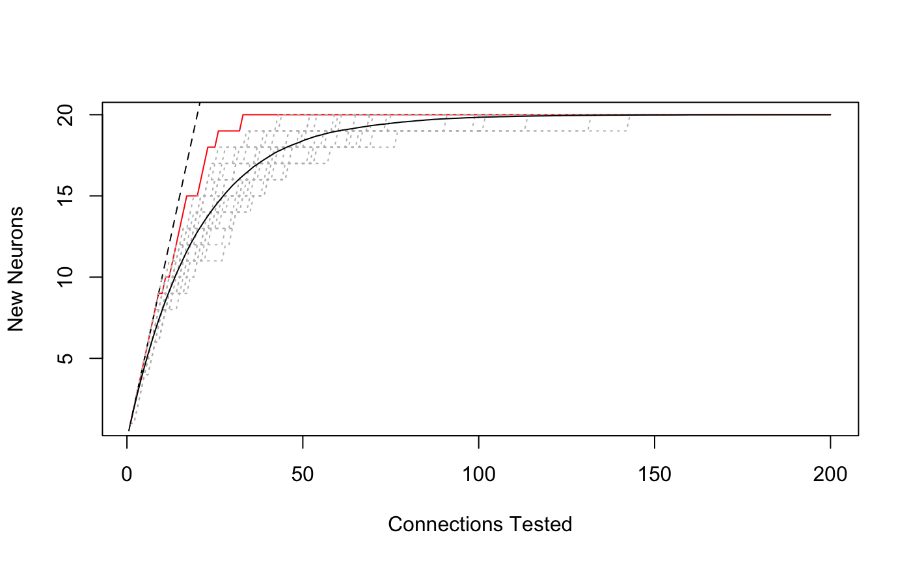

R/sampling_curves.R
samplingcurve.RdMake a basic sampling curve from a vector of partner ids
plot.samplingcurve plots a standard sampling curve
lines.samplingcurve adds a line for a sampling curve to
an existing plot. It can also add a specified number of re-randomised
versions of the curve, optionally producing a smoothed mean.
hist.samplingcurve plots a histogram of connections per
partner neuron. strictly speaking this is a bar plot for a table object
rather than an R histogram
samplingcurve(partners, N = NULL, m = NULL) # S3 method for samplingcurve plot(x, col = "red", ...) # S3 method for samplingcurve lines(x, rand = 0, mean = FALSE, lty = 3, col = NULL, ..., colpal = "grey") # S3 method for samplingcurve hist(x, decreasing = TRUE, plot = TRUE, ...)
| partners | A vector or partner neuron identifiers (typically numeric such as CATMAID skeleton ids) |
|---|---|
| N, m | optional parameters describing the total number of connections and the total number of partners (if known). |
| x | A |
| col | line colour (see |
| ... | Additional arguments to plotting functions |
| rand | number of randomised versions of curve to plot |
| mean | whether to plot the mean of specified number of random curves rather than each individual curve. |
| lty | line type (see |
| colpal | A colour palette. Either a function (see
|
| decreasing | Whether to plot the strongest connections closest to the y
axis (default |
| plot | Whether to show the histogram |
An object of class samplingcurve, currently implemented as a
data.frame.
hist.samplingcurve returns the table of connections per
partner used for the plot.
scuniform=samplingcurve(sample(1:20, size=200, replace=TRUE)) plot(scuniform)# add 20 random realisations lines(scuniform, rand=20)# add a smooth mean lines(scuniform, rand=1000, mean=TRUE, col='black')scuniform=samplingcurve(sample(1:20, size=200, replace=TRUE)) hist(scuniform)